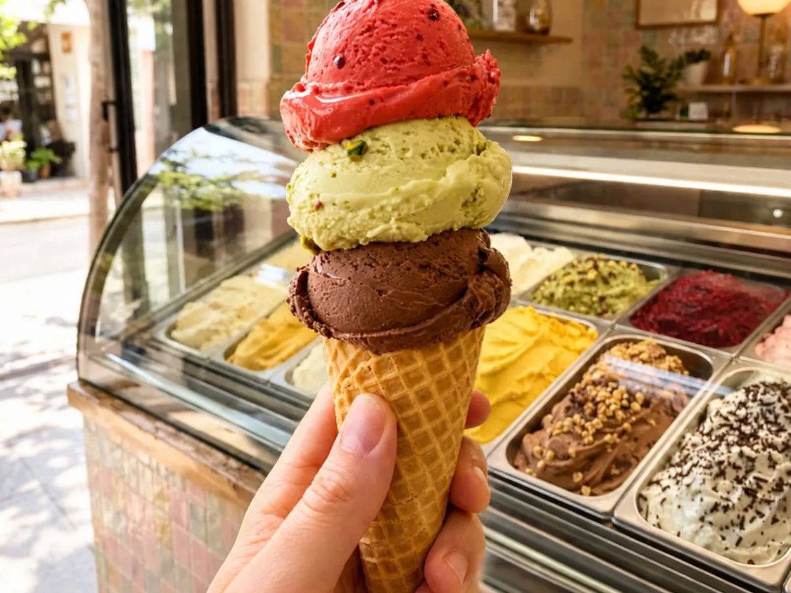

De 10 beste ijssalons in Nijmegen
Bijgewerkt op 20 november 2026.
Zin in een ijsje in Nijmegen? Van een bolletje Italiaans ijs in de Koningstraat tot een hoorntje aan de dijk in Lent: de stad heeft genoeg ijssalons die hun ijs zelf maken. Wij zochten er tien uit. Let op: veel ijssalons gaan in de winter dicht. In de lijst staat bij elke zaak wanneer je er terechtkunt, en welke ook in de koude maanden open zijn.

Zo hebben we gekozen
We bekeken in oktober 2026 de websites van de ijssalons in onze bedrijvengids en van bakkers en lunchcafés die zelf ijs maken. We letten op of het ijs ambachtelijk is, hoeveel keus er is, of er vegan of suikervrije smaken zijn en wanneer de zaak open is.
Goed om te weten: de openingstijden van ijssalons wisselen per seizoen en soms per weer. Check daarom even de site voordat je gaat, zeker in het voor- en najaar.
1. IJssalon Vincenzo: ruim veertig smaken
Vlak bij het Koningsplein maakt IJssalon Vincenzo sinds 2012 elke dag vers Italiaans ijs, in een open ijskeuken waar je kunt meekijken. In de vitrine liggen meer dan veertig smaken die regelmatig wisselen, van pistache en stracciatella tot stroopwafel en salted caramel.
Het vruchtenijs, zoals mango en framboos, is vegan, en er is altijd een suikervrije smaak. De allergenenkaart staat online. In de winter is Vincenzo dicht, vanaf begin maart 2027 ben je weer welkom.
Goed voor: wie veel keus wil, en vegan of suikervrij eet.
2. Bloem: ijs met melk van de boer
Bij Bloem in de Stikke Hezelstraat kijk je via de open keuken mee terwijl er vers room- en sorbetijs wordt gedraaid. Eigenaar Richard Bloem leerde het vak in Italië. Melk en room komen van een boer in de buurt en het fruit uit de omgeving van Nijmegen.
De smaken wisselen, en er is ook vegan en suikervrij ijs. Daarnaast schenkt Bloem twee eigen koffieblends en kun je cannoli of een Luikse wafel bestellen. Sinds 1 oktober is de zaak dicht, begin volgend jaar gaat hij weer open.
Goed voor: wie wil weten waar zijn ijs vandaan komt.
3. IJssalon de Zon: een hoorntje aan de dijk
Na een rondje over het eiland in de Waal is een hoorntje bij De Zon in Lent een mooie beloning. In een oude doorrijschuur naast het café wordt ambachtelijk ijs geschept in achttien smaken, van vanille en stracciatella tot bokkenpoot en monchou.
Er is ijs voor wie geen gluten of lactose verdraagt en voor wie vegan eet, en kinderen kunnen een kinderhoorntje halen. Neem je ijsje mee naar een strandje aan de Waal, met uitzicht op de stad. Je parkeert gratis voor de deur. In de zomer open van woensdag tot en met zondag, in de winter is er alleen koffie to go.
Goed voor: fietsers, wandelaars en gezinnen.
4. Emozioni: het hele jaar Italiaans ijs
In de Molukkenstraat schept Sergio ambachtelijk Italiaans ijs, met elke dag een iets ander aanbod. Heb je zelf een smaak in gedachten, vertel het hem gerust.
Emozioni is meer dan een ijssalon: je drinkt er Italiaanse koffie, later op de dag een glas wijn met antipasti, en er zijn panini en Italiaanse delicatessen. Omdat de zaak het hele jaar open is, kun je hier ook in de winter een ijsje halen. Er is een beschut terras.
Goed voor: wie ook buiten het seizoen zin heeft in ijs.
5. Strik in Lent: ijs tot in de avond
Op het Oranje Marieplein in Lent heeft banketbakker Strik een winkel met een eigen ijsloket. Dat is elke dag open van 10.00 tot 21.00 uur, dus ook na het avondeten kun je nog een ijsje halen.
Strik is een Nijmeegs familiebedrijf dat sinds 1937 bakt. In de patisserie haal je ook gebak en desserttaartjes. In de winkel aan de Ziekerstraat in het centrum kun je blijven zitten voor een ijscoupe of milkshake.
Goed voor: een ijsje na een zomerse avondwandeling in Lent.
6. Looijenga: het ijsloket aan de Berg en Dalseweg
Banketbakkerij Looijenga bestaat sinds 1830 en heeft in het seizoen een ijsloket aan de zijkant van de winkel. Het is open van 1 april tot 1 oktober, in mei tot en met augustus tot 21.00 uur, en ook op zondagmiddag.
Handig als je in Nijmegen-Oost woont of op weg bent naar het Kwakkenbergbos of de Heilig Landstichting.
Goed voor: wie in Oost woont of op weg is naar de heuvels.
7. Clevers IJsbar: ijs in Lindenholt
In Lindenholt hoef je niet naar het centrum voor een ijsje. Aan het Leuvensbroek zit een ijsbar van Clevers, een ijsketen met vestigingen door heel Nederland. Je haalt er ambachtelijk ijs om mee te nemen, en op de ijskaart van Clevers zie je vooraf welke smaken er zijn.
De ijsbar is elke dag open van 12.00 tot 19.00 uur. Handig na schooltijd of na een rondje door het park.
Goed voor: gezinnen in Lindenholt en Dukenburg.
8. DROOM!ijs: ijs met een goed verhaal
Aan de Waalbandijk maakt DROOM! ijs, en daar doen mensen werkervaring op in de keuken, de bakkerij en de winkel. Met je ijsje help je dus ook iemand op weg.
In de winter zitten DROOM!ijs en The House of Rocky Chocolate samen onder één dak. Dan drink je er koffie met chocolade en haal je chocoladeletters, pepernoten en gevulde speculaas. Het ijsseizoen begint weer in het voorjaar.
Goed voor: wie zijn ijsje graag ergens haalt waar het een goed doel dient.
9. Puux: ijs bij de lunch in de Hazenkamp
Puux is een wijklunchcafé aan de Groenestraat, vlak bij het Goffertpark. Karsten en Maria koken zoveel mogelijk met biologische producten, vaak van de buren in de straat.
Naast de lunch en zelfgebakken gebak kun je kiezen uit een flinke rij smaken ambachtelijk ijs. Een fijne stop na een wandeling door het Goffertpark. Puux is open van woensdag tot en met maandag.
Goed voor: een ijsje na een rondje Goffertpark.
10. Strik Ziekerstraat: ijscoupes in de proeverij
In de winkel van Strik aan de Ziekerstraat kun je blijven zitten. In de proeverij bestel je een ijscoupe, een ijskoffie of een milkshake, of combineer je je ijs met een dessertje.
Fijn als je tijdens het winkelen even wilt zitten in plaats van met een hoorntje door de stad te lopen. De winkel is dagelijks open.
Goed voor: een ijscoupe aan tafel tijdens het winkelen.
Ook lekker
- Madaq in de Pauwelstraat: een chocolatier met handgemaakte bonbons en macarons.
- Holy Sweets in de Houtstraat: Franse patisserie, als je liever een gebakje dan een ijsje wilt.
Alle ijssalons staan in de bedrijvengids onder ijssalons. Ga je met kinderen op pad? Lees dan ook Nijmegen met kinderen.
Meer in onze gids lunch, ontbijt en high tea in Nijmegen.
Veelgestelde vragen
Welke ijssalon in Nijmegen is in de winter open?
Emozioni in de Molukkenstraat is het hele jaar open. Het ijsloket van Strik aan het Oranje Marieplein in Lent is volgens de site elke dag open tot 21.00 uur. De meeste andere ijssalons, zoals Vincenzo, Bloem en De Zon, zijn in de winter dicht.
Wanneer gaat IJssalon Vincenzo weer open?
IJssalon Vincenzo in de Koningstraat is in de winter dicht en gaat begin maart 2027 weer open.
Waar haal je vegan ijs in Nijmegen?
Bij IJssalon Vincenzo is het vruchtenijs vegan. Ook Bloem in de Stikke Hezelstraat en IJssalon de Zon in Lent hebben vegan ijs.
Waar haal je een ijsje met kinderen in Nijmegen?
IJssalon de Zon in Lent heeft kinderhoorntjes, een terras en gratis parkeren. In Lindenholt is Clevers IJsbar handig, en Puux ligt vlak bij het Goffertpark.
Waar eet je een ijscoupe aan tafel in het centrum?
In de proeverij van Strik aan de Ziekerstraat bestel je een ijscoupe, ijskoffie of milkshake.